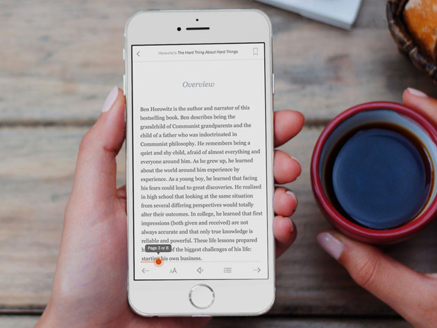

Books and Smartphones
Greetings! Welcome to the Books and Smartphones webpage! This website discusses the importance that media queries have in revolutionizing reading in digital devices and how they still have an important impact in accessing knowledge today. It will also demonstrate how media queries work to achieve these such goals.
Smart Books?
Media Queries play a major role in just about all devices in today's society. One very important endeavor that will be presented and discussed is the topic of reading. Media queries have not only changed the way we view or utilize material, but it has also provided every user the opportunity to access an extensive library of books and reading material that can be viewed and controlled by just the tip of our fingers.
The Power of our Finger Tips!
Perhaps the most important creative endeavor to be presented is the option to view books and illustrations. This means that we have the ability to scroll through our stories vertically or horizontally on our phones and ipads thanks to the power of media queries. These same media queries allow for this to happen by first organizing the pages and articles into grids and scrolling menus. These allow for the reading material to fit into any mobile device and they allow the user to change the color, size, or font of the given text, increasing accessibility. Furthermore, they not only organize pages, but they also provide drop down menus that can be accessed anytime to find a certain chapter, or bookmark a specific page.
From day to night
Besides the technical advantages that these media queries provide, a physical benefit is the introduction of a day and night mode. This mode increased accessibility for many users who enjoy reading during the evening, without causing major straining to their eyes, this is done with a simple day and night time clock function. If enabled, it will dim the lighting of the device and reduce straining as the blue lighting is hevily decreased.
The Future
Who knows what the future has before us? Perhaps these media queries will evolve to allow us to read material in 3D holograms? Or maybe we'll be given the ability to project them onto any material with just our phones? The beauty of these media queries is that there is so much more that can be accomplished with just our cellular devices. Lastly, if you've successfully read through this whole website despite feeling discouraged by the amount of text, then congrats! You've made it to the last page of the book!